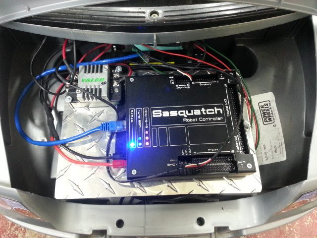
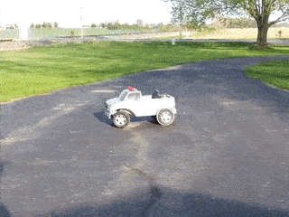
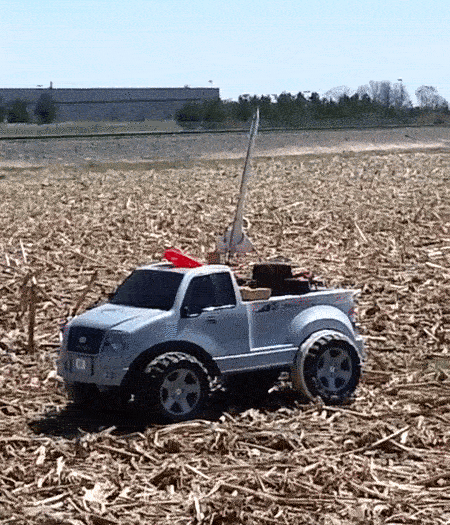

The F150
March 2014 - May 2014
During my freshman year of high school, I joined our school's FIRST Robotics Team. My dad joined as a chaperone, and we both had a blast that year. He got really involved, and we were both really disappointed when it ended. The next few days, he was telling me all about other robot controllers that there are. Soon, he had an idea.
The idea was to take a Power Wheels car and make it remote-controlled. We got a Sasquatch from 221 Robotic Systems. This is a programmable device with many outputs able to receive inputs through WiFi. To control the motors, we got Talon speed controllers. They take PWM input and vary the speed of motors based on that input. For steering wheel control, we needed position feedback to know which way to turn the steering wheel. We put in a potentiometer and connected it to the steering column to monitor how the wheel was positioned. Programming the Sasquatch was pretty easy, and driving it was simple with 221's driver station. Using a joystick and a laptop, the truck could drive and turn.

We then fitted the truck with Traxxas motors to increase speed and torque. With the heavy lead-acid battery in the back and the powerful motors, the truck would pop wheelies when you accelerate.

One day for a party, I took one of my model rockets and attached it to the back of the truck. I hooked the Sasquatch to an igniter and stuck it in the rocket. Then we gathered everyone, drove it out into a field, and launched it remotely from the back of the truck. It looked pretty neat.
